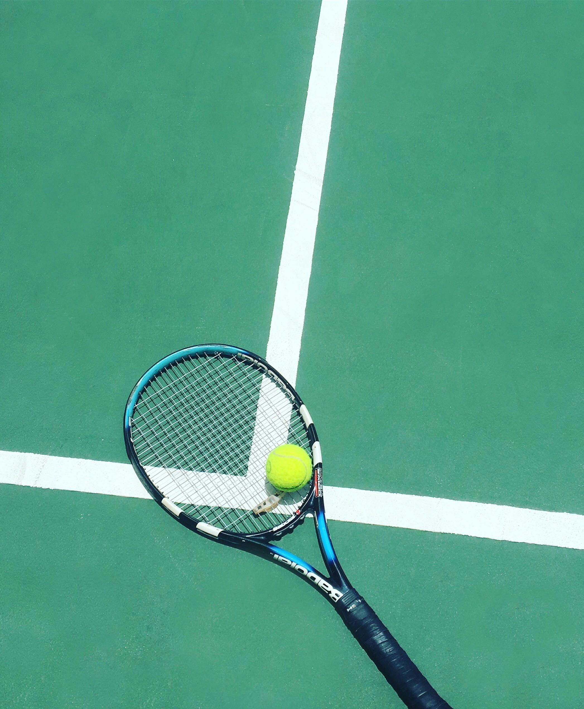
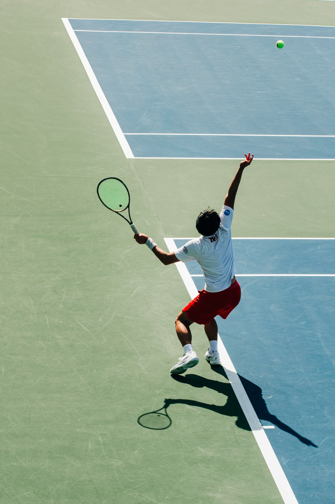

Home
Tennis is a very fun and competitive sport, and I love to play this in my freetime. Tennis is easy to learn for beginners and it is a nice way to be physically active and hang out with friends.
This sport is suitable to play for people of all ages and it can fit into your schedule through getting the required equipment, having some practice sessions and holding matches with the people who practice with you.

About Me
I first played tennis with my brothers at the apartment's tennis courts. Later, I attended a tennis practice club with my peers at elementary school. I got interested in this sport and continue to play it for exercise and improving myself.

Best Times & Seasons
Tennis is usually in the daytime or in the evening, when there is enough lighting. It is important to play under good and safe weather.
The professional tennis season happens from January to November. Major tournaments are spread out through the year and players would play at indoor courts during colder weather.
Professional Tennis Tournaments
| Tournament | City | Season (months played) |
|---|---|---|
| Australian Open | Melbourne | mid-to-late January |
| French Open | Paris | late May to early June |
| Wimbledon | London | late June to early July |
| US Open | New York | late August to early September |